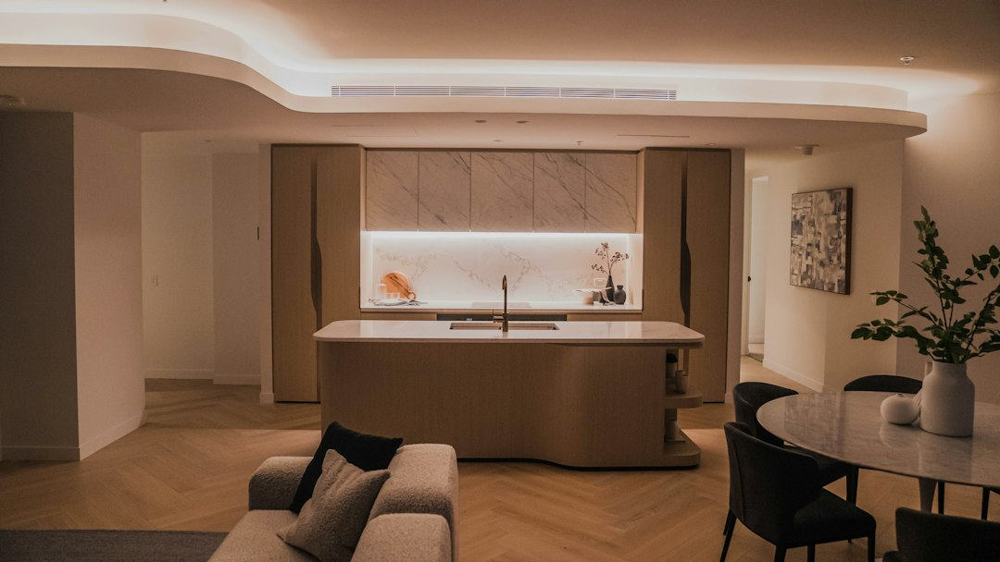

For homeowners comparing kitchen renovation melbourne options, the practical job is to match scope, budget, layout limits and contract detail before measuring finishes or choosing appliances.
Kitchen Renovation Melbourne Explained
Melbourne Kitchen Reno frames a useful first decision: is the kitchen a budget refresh, a fully fitted renovation, or a premium rebuild with custom joinery and extra features. That split matters because it changes the quote conversation from colour and surface choices to demolition, plumbing, electrical updates, cabinetry, benchtops, splashback and hardware.
A refresh may keep the layout intact and focus on door fronts, benchtop and splashback. A full renovation can bring new cabinetry, benchtops, plumbing and electrical updates, splashback and soft-close hardware. A premium project may add natural stone, made-to-measure joinery or a butler's pantry where the floor plan supports it.
- Keep: note what can stay, such as the broad layout or appliance positions.
- Change: list storage, workflow, lighting and bench-space issues that need design attention.
- Confirm: ask whether the quoted scope includes design, manufacture, demolition and installation.
Cost Signals To Put In The Brief
The published cost bands are indicative, not a substitute for a written fixed-price quote. They are still useful for early sorting. If the rough budget is closer to a refresh, ask which finish changes can be made without moving services. If the budget is for a full renovation, ask how cabinetry, benchtops, trades and installation are separated in the quote.
For premium work, the important question is not only whether natural stone, custom joinery or a butler's pantry can be included. Ask what each feature does to lead time, site access, storage, cleaning zones and variation risk. A butler's pantry can keep a main kitchen clearer for entertaining, but the source guidance says suitability depends on floor plan and budget.
Timing From Contract To Handover
The source page describes a mid-range full renovation as roughly 6 to 12 weeks from contract signing to handover. Cabinetry and stone fabrication are described as about 4 to 6 weeks before site work, with on-site work typically 2 to 4 weeks once cabinetry is on site, plus finishing time.
That sequence gives owners a practical way to prepare. Before signing, confirm when site measurements are taken, when cabinetry is ordered, when appliances must be selected, and what happens if a finish is unavailable. For households staying in the property, ask which days affect cooking access, water, power and rubbish removal.
- Separate design time from build time in your notes.
- Ask when cabinetry and stone choices become hard to change.
- Check how variations are priced before work starts.
Home Type Changes The Questions
The source material distinguishes period homes, post-war brick homes and apartments, which is more useful than a broad Melbourne label. A terrace, Edwardian or bungalow may call for made-to-measure joinery rather than a flat-pack run. An apartment or compact kitchen may need more attention on storage, bench space and owners corporation documentation.
For inner-city apartment work, the published page names compact galley, single-wall and apartment kitchens as common requests, with Richmond, Brunswick, Footscray and the inner city given as examples. Owners should ask what documentation is needed, how deliveries and lift access are managed, and whether acoustic underlay or other building requirements affect the plan.
Layout thinking is part of the same early brief. A separate Melbourne kitchen design guide can help owners frame workflow, storage and fixture choices before the renovation quote is finalised.
Quote And Contract Checks
The source page says the renovator provides a fixed-price written quote after an in-home consult, and that the build should proceed under a fixed-price written contract with a transparent variations process. That gives owners a clear checklist for comparing proposals without pretending all quotes are the same.
- Ask whether the business or trades are VBA-registered where required for the work.
- Confirm whether design, manufacture, demolition, installation and handover are included.
- Ask whether domestic building insurance applies to the contract value.
- Check whether soft-close runners and hinges are included in the base price.
- Confirm what is excluded, especially appliances, painting, flooring or unexpected repair work.
The useful comparison is not the lowest number alone. A clearer quote explains inclusions, exclusions, timing, variation handling and the person responsible for coordinating trades.
Who This Applies To
This guide is for Melbourne owners preparing a kitchen renovation brief before requesting an in-home design consult. It suits homeowners considering a full rebuild, apartment owners working with a compact footprint, and owners of period homes who need cabinetry to fit the character and dimensions of the property.
It is less useful for someone only replacing a freestanding appliance or buying flat-pack cabinets without design, contract or installation support. It is also not a substitute for legal, building or insurance advice. Use it to ask better questions, then rely on the written quote, contract and any required professional documentation for the actual project.
- Write The Brief. List the current kitchen problems, preferred scope, rough budget, property type and must-have finishes before the consult.
- Measure The Constraints. Note access, apartment rules, appliance positions, storage gaps and any layout changes you want tested.
- Request A Written Quote. Ask for a fixed-price written quote that separates inclusions, exclusions, timeline and variation handling.
- Check Contract Items. Confirm registration, insurance where required, soft-close hardware, demolition, installation and handover details before signing.
| Project path | Published budget signal | Main quote question |
|---|---|---|
| Budget refresh | About $12,000 to $30,000 | What changes can be made without altering the layout? |
| Fully fitted renovation | About $25,000 to $60,000 | Are cabinetry, benchtops, plumbing, electrical updates and installation included? |
| Premium renovation | Can exceed $80,000 | How do custom joinery, natural stone or a butler's pantry affect cost and timing? |
This guide covers Melbourne kitchen renovation cost bands, timing, quote checks, home-type questions and contract preparation.